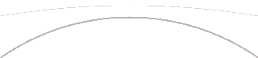

Mission Control // Web Provisioner
Provision MeshCadet
Connect a T-Deck Plus over USB to read its live provisioning status and identity, scan a MeshCore contact QR, manage contacts, channels, notification defaults, and the device name, set the admin PIN, and export or clear conversation history — straight from your browser. Everything below runs entirely client-side; nothing is sent to a server.

Browser not supported
This page needs the
Web Serial API,
available in a desktop build of Google Chrome or
Microsoft Edge, loaded over HTTPS
(or from localhost) — Firefox, Safari, and mobile
browsers don't support it.
1. Connect your T-Deck Plus
Plug the T-Deck Plus into this computer with a USB-C cable, then click Connect and choose its port from the browser's picker.
2. Status & identity
- Provisioned
- —
- Device name
- —
- Public key
- —
- Contacts
- —
- Channels
- —
- Battery
- —
- GPS fix
- —
- GPS coords
- —
- GPS clock
- —
3. MeshCore contact URLs
Two ways to hand this node to a MeshCore peer — pick whichever
fits: Format A for a companion-app QR scan, Format B for
meshcore-cli.
Format A — companion-app QR
Scan with a MeshCore companion app to add this node as a contact.
Format B — meshcore-cli card URI
Fetched fresh from the device over Web Serial every time — the
browser cannot generate this itself (the signature needs the
device's private key, which never leaves it). Copy and paste
verbatim into
meshcore-cli import-contact <URI>.
—
4. Contacts
Lists the device's in-progress (pre-commit) staging set — pair with add/remove below and Commit (section 7) to verify the configured list before persisting it.
| Idx | Public key | Telemetry | Name | |
|---|---|---|---|---|
| No contacts read yet. | ||||
5. Channels
Lists the device's in-progress (pre-commit) staging set. The channel hash shown is computed by the firmware, not this page.
| Idx | Hash | Bits | Primary | Name |
|---|---|---|---|---|
| No channels read yet. | ||||
6. Notification defaults
What happens on message receipt before the user changes them on-device.
7. Commit provisioning
Persist all of the above to flash. Run this after configuring contacts, channels, and notification defaults.
Note: on a first-boot device, committing reboots it into the mesh (closing this connection) — reconnect once it's back up. On an already-provisioned device, committing re-persists the live config without rebooting.
8. Admin PIN
Set (or reset) the PIN that unlocks the on-device admin menu. Physical USB possession is the authentication factor — resetting the PIN needs no old PIN, just the device in your hand.
9. Export conversation history
Read every stored message (DMs and channels), oldest-first, and save it as a local text file.
Privacy: the export contains the full text of private conversations. It is read into this browser and offered to you as a download only — nothing is uploaded, transmitted, or logged. A file is written only when you click Download transcript.
10. Clear conversation history
Permanently erase all stored messages — every DM and channel conversation — from the device's flash.
This cannot be undone. Every sent and received message across all conversations will be wiped from the device.
MeshCadet is provided as-is, with no warranty and no guarantee of safety — read the full disclaimer in the project README.